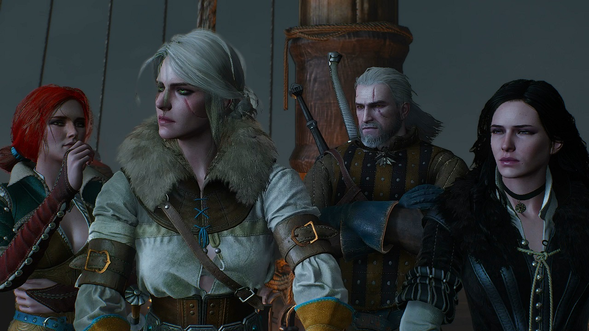
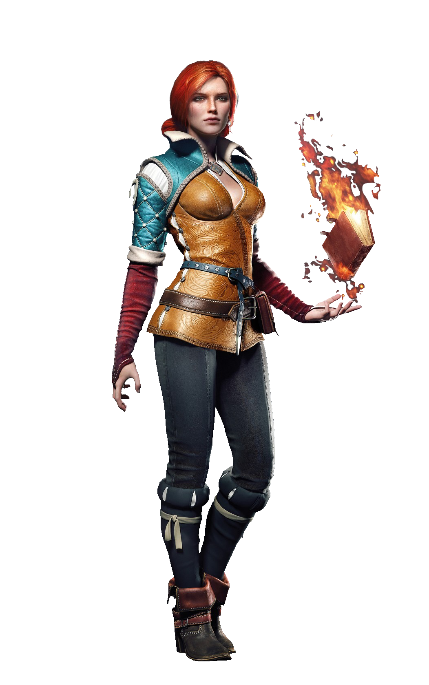
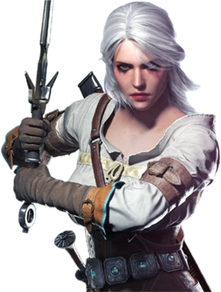
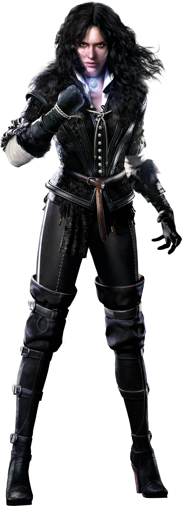
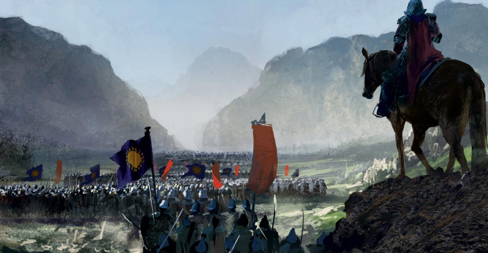
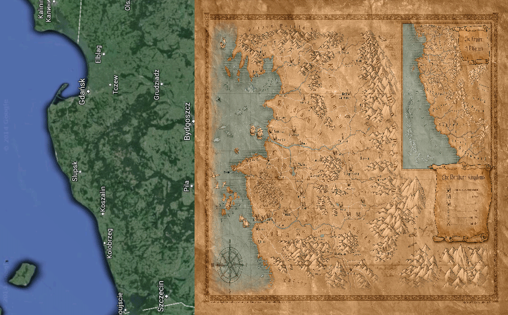

Witcherpedia
Main characters
Geralt of Rivia
Geralt of Rivia is a witcher and the main protagonist of the Witcher series by Andrzej Sapkowski and its adaptations, including The Witcher, The Witcher 2: Assassins of Kings and The Witcher 3: Wild Hunt video games. Like all witchers, Geralt is a monster hunter for hire. He possesses superhuman abilities and is a master swordsman. During the Trial of the Grasses, Geralt exhibited unusual tolerance for the mutagens that grant witchers their abilities. Accordingly, Geralt was subjected to further experimental mutagens which rendered his hair white and may have given him greater speed, strength, and stamina than his fellow witchers. Geralt is also known as Gwynbleidd, meaning "White Wolf" in Elder Speech. He was given this alias by the dryads, and is also called the Butcher of Blaviken after an unfortunate incident in that town. Despite his title, Geralt does not hail from the city of Rivia. After being left with the witchers by his mother, Visenna, he grew up in their keep of Kaer Morhen in the realm of Kaedwen. In the interest of appearing more trustworthy to potential clients, young witchers were encouraged to make up surnames for themselves by master Vesemir. As his first choice, Geralt chose "Geralt Roger Eric du Haute-Bellegarde", but this choice was dismissed by Vesemir as silly and pretentious, so "Geralt" was all that remained of his chosen name. "Of Rivia" was a more practical alternative and Geralt even went so far as to adopt a Rivian accent to appear more authentic. Later, Queen Meve of Lyria knighted him for his valour in the Battle for the Bridge on the Yaruga conferring on him the formal title "of Rivia", which amused him. He, therefore, became a true knight of Lyria.
Triss Merigold
Triss Merigold of Maribor is a sorceress. She is called the "Fourteenth of the Hill" because she was erroneously thought to have been killed during the Battle of Sodden Hill. A friend of Yennefer and witcher Geralt of Rivia, she is in love with the latter. Triss took care of Ciri at Kaer Morhen for some time and is like an older sister to her. It was through her intervention that Ciri was not inadvertently given harmful elixirs; the witchers were planning on subjecting her to the Trial of the Grasses as a last resort in an attempt to control Ciri's growing magical power. This would have either killed Ciri or made her a mutant, meaning she would become barren, unable to bear children like every other sterile witcher. Triss was a member of King Foltest's royal council along with Fercart and Keira Metz, as well as a founding member of the Lodge of Sorceresses. She is a skilled healer and carries with her many magical potions, but she never uses them on herself because ironically, she is allergic to magic. She is also quite a powerful mage, certainly when it counts most. She wears an amulet - sapphire overlaid with silver.
Cirilla(Ciri)
Cirilla Fiona Elen Riannon (known as Ciri or the Lion Cub of Cintra), was born in 1253 or 1252,[1] and most likely during the Belleteyn holiday. She is a Princess of Cintra, and the daughter of Pavetta and Duny. She is the granddaughter of Queen Calanthe. After Geralt of Rivia lifted a curse from Duny, the Urcheon of Erlenwald, he demanded from Duny his wife Pavetta's firstborn child, a child he had but didn't know he had, due to the Law of Surprise. Six years to the day after the child's birth, Geralt went back to Cintra for her, but did not take her with him to Kaer Morhen at that time. In fact, he didn't even lay eyes on her and only spoke with Calanthe. The Queen divulged no information to him, not even the child's gender. This child was named Cirilla. While she was still an infant, Ciri's parents were both lost in a storm at sea. They were presumed dead. She spent her youth in Cintra and the Skellige Islands in the care of her grandmother and her uncle.
Yennefer
Yennefer of Vengerberg (born on Belleteyn of the year 1173) — a sorceress who lived in the capital city of Aedirn - Vengerberg. She was the youngest member of the Brotherhood of Sorcerers and later the Lodge of Sorceresses attempted to recruit her. She is the love of the witcher Geralt of Rivia and a mother figure to Ciri, a former royal advisor to king Demavend of Aedirn and a close friend of Triss Merigold. The lady of Vengerberg was famous for her beauty, even though during the events of "The Tower of the Swallow" she was 94 years old. Yennefer had locks of curly, raven black hair fragrant with lilac and gooseberry perfume, falling in a cascade of curls on her shapely shoulders. Her face was very pale, triangular in shape with a slightly receded chin. Her eyes were cold and sparkling with a remarkable violet penetrating gaze, in anger blazing with livid, blue-gray fire. Those very eyes also concealed wisdom and imperiousness. Yennefer's nose was slightly long, mouth was pale with thin and slightly crooked, soft, sweet with lipstick, proud lips. On her long and slender neck hanged a black marigold with a star made of obsidian sparkling with a multitude of tiny diamonds embedded in it. Yen had pronounced cheekbones, naturally slightly irregular eyebrows but trimmed by hand and emphasized with charcoal, long eyelashes and petite hands. Even in high-heeled shoes she wasn't tall, was beautiful but threatening, having incredibly thin and slender waist and slender legs. Yennefer's skin was as delicate as a sixteen-year-old girl. Her breasts were rounded and delicate, with nipples so pale that they were apparent only by their prominence. She always dressed in black and white, at times wore stockings, wore frilled panties but never wore trivialities with underwire, she didn't need to. Her voice was resonant and mildly derisive. Her overall feminine shape was one of a twenty-year-old girl and she moved with a natural, unforced grace. It is also said, that she smells of lilac and gooseberries. She was a quadroon (meaning she had ¼ of elven blood, in her case on her mother's side). During the Battle of Sodden Hill she was blinded by Fringilla Vigo, a Nilfgaardian sorceress. Her sight was later magically restored but she still bore the emotional scars. Like most sorceresses, she was sterile. She secretly sought a way of restoring her fertility. She gave her motherly love to Ciri — the child destined for Geralt by the Law of Surprise — teaching her about magic while in Ellander, at the Temple of Melitele under the watchful eye of Nenneke. Yennefer first appeared in the short story "The Last Wish" (in The Last Wish short story collection). She later appeared in several more "canon" short stories, including "The Bounds of Reason", "A Shard of Ice" and "Something More", one "non-canon" short story: "Coś się kończy, coś się zaczyna", and of course, all the novels in the Witcher saga. It is implied in the story "The Last Wish" that her attractive looks were a product of magic and had been acquired during her training, as with most other sorceresses. Geralt notes how her shoulders are slightly lopsided and by the end of the story realizes that Yennefer used to be a hunchback. Nevertheless, his love for her does not diminish.
Fractions

Nilfgaard empire
The Empire of Nilfgaard or the Nilfgaardian Empire, also simply known as the Empire or Nilfgaard, is the most powerful empire in the history of the known world. It is located in the southern part of the Continent and boasts both a thriving economy and a strong, well-trained army with talented commanders. It has expanded mostly through the conquest of foreign countries, which were then turned into provinces of the Empire. The Empire's inhabitants believe that "real" Nilfgaardians are only those born in the heart of the Empire, and not those born in the conquered provinces. The provinces are ruled by either stewards or kings (in cases in which a king willingly surrenders, he retains his throne but is subject to the Emperor or just a vassal). The empire has expanded throughout the years, conquering new lands and going as far to the north as the Yaruga River during the reign of Emperor Emhyr var Emreis. The major religion in Nilfgaard is the cult of the Great Sun. In the Witcher saga, the Empire is portrayed as an overarching antagonist, with many free peoples of the North expressing hatred towards it with passion. It is introduced in Blood of Elves, when it invades Cintra.
Northern Kingdoms
The Northern Kingdoms or the Northern Realms are a group of human states north of the Amell mountains. Their inhabitants are called Nordlings by the Nilfgaardians (both the ones from the core of the Empire, and from the conquered provinces). Aside from humans, a number of dwarves, elves, gnomes and halflings live in the Northern Kingdoms as second-class citizens. The Northern Kingdoms were invaded and partially conquered by the Nilfgaardian Empire. During the Third Northern War, only King Radovid V of Redania, known as "Radovid the Stern", remained of all the crowned heads of the major kingdoms. For this reason, during this war the Northern Kingdoms were known as Radovid's Realms.
Top